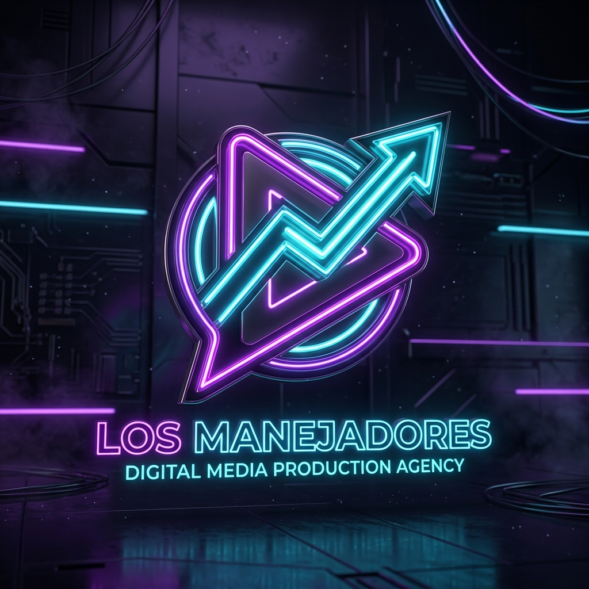
Conectamos talentos con el mundo.
Escalamos activos digitales.
Desarrollamos y comercializamos influencers virtuales hiperrealistas con consistencia consagrada, canales faceless de YouTube y programas de coaching ejecutivo.
Influencers IA: Modelos Listos para Venta y Escalamiento
Activos digitales hiperrealistas con consistencia consagrada. Listos para acuerdos de marca, patrocinios B2B y embudos directos a suscripción VIP (Fanvue / PPV).
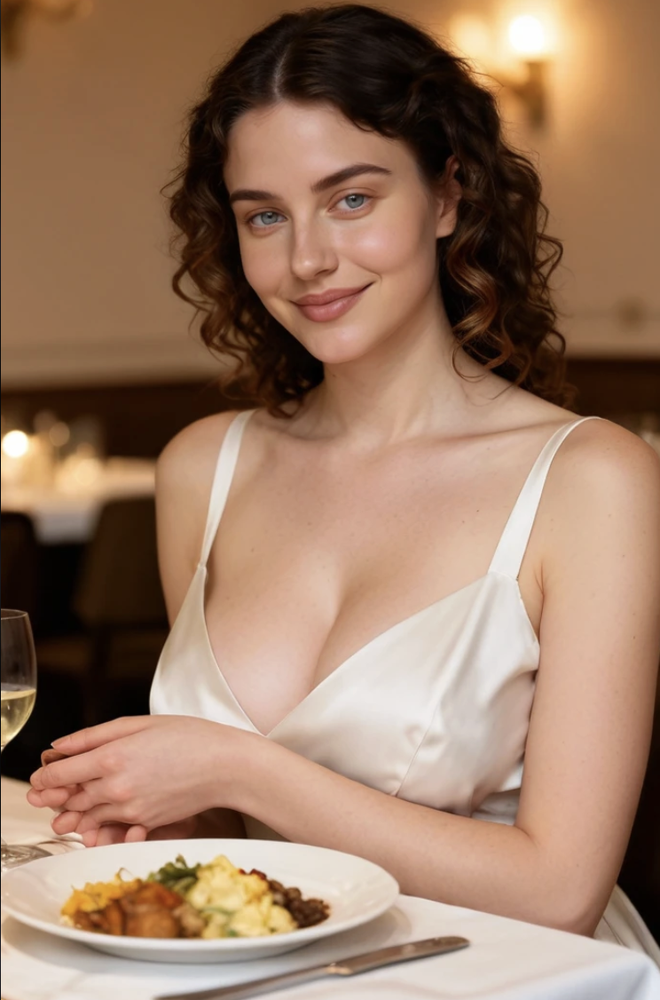
Activo Certificado • Lifestyle ConscienteElena Daddario
Psicología & Lifestyle Europeo27 años. Rusa en Miraflores. Elegancia atemporal, psicología y bienestar emocional. Disponible para campañas de marcas conscientes, moda y lifestyle.
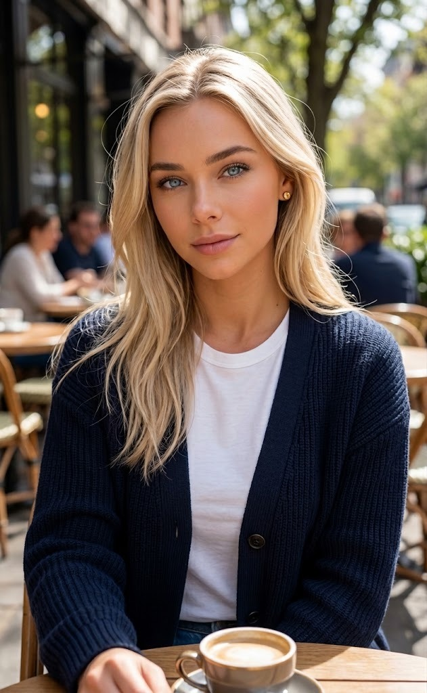
Activo Certificado • Clean BeautyJulia Schmidt
Dermocosmética & Clean Beauty24 años. Miraflores. Reseñas científicas sin filtro, dupes accesibles y skincare real. Ideal para colaboraciones con marcas dermocosméticas y belleza limpia.
Laura "Lau" Taeda
Nutrition Lifestyle + Science-Based Reviews32 años. CDMX. Nutrióloga bicultural, desmitificación de dietas con evidencia médica y recomposición corporal. Ideal para marcas deportivas, suplementos y salud.
Mateo Silva
FinTech, Inversiones Cuantitativas & Real Estate30 años. Canary Wharf / Fráncfort. Estrategias cuantitativas de inversión, modelos en Python y finanzas modernas. El nicho con mayor CPM/RPM de YouTube ($18–$45 USD) y conversión en SaaS y consultoría B2B.
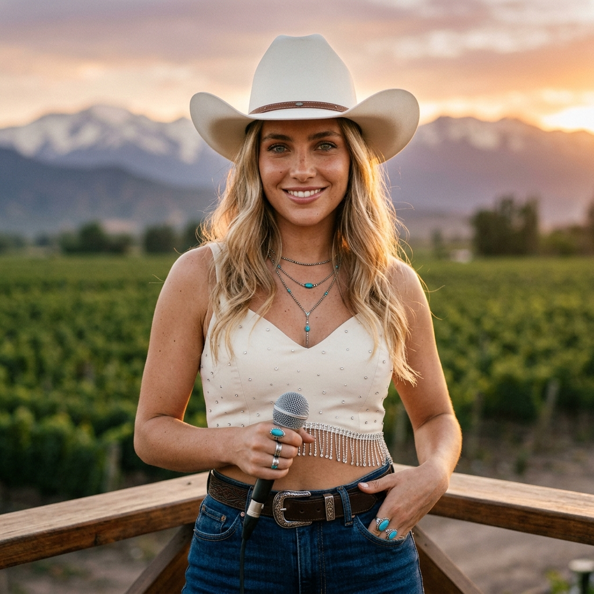
Activo Musical • Cumbia RancheraMaite Valenzuela
Cumbia Ranchera & Country Chic24 años. Valle de Colchagua. La voz hot de la cumbia ranchera chilena. Videoclips de alto impacto, streaming musical y presencia en fiestas y festivales.
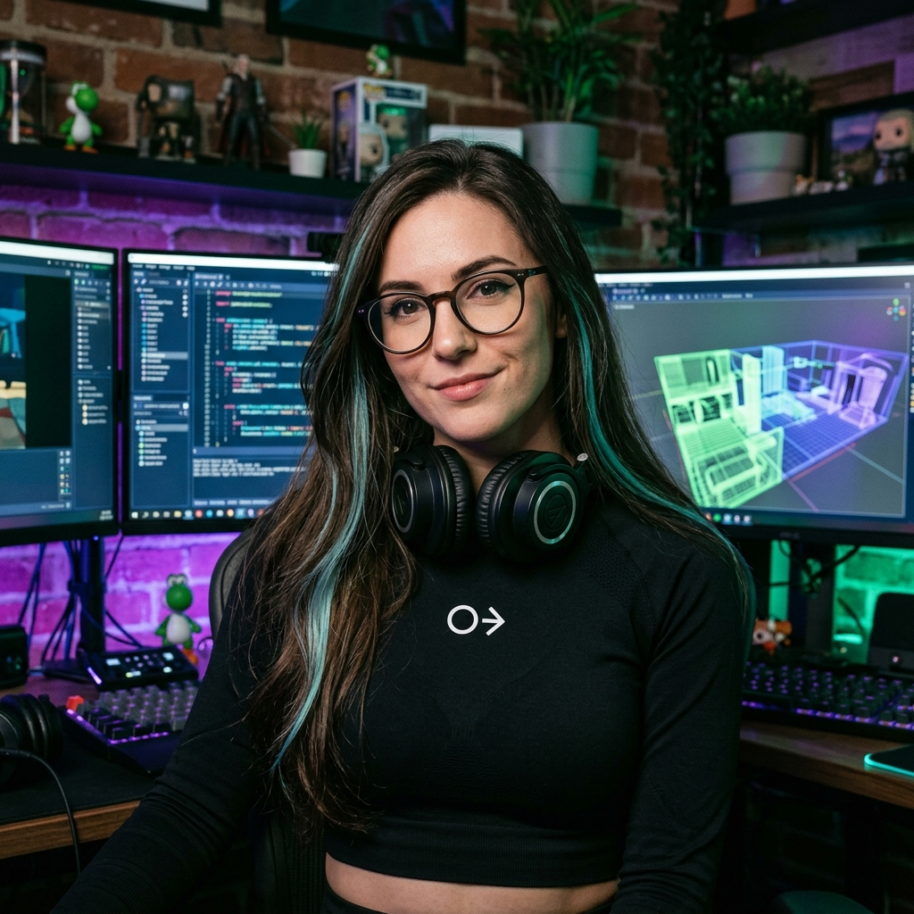
Caso Validado • +500 VIPsKira Voss
Game Dev, Ciber-Activismo & Tech Glamour26 años. Activo insignia: desarrollo de videojuegos indie (Godot/Unreal), tecnología y estética cyberpunk con comunidad fidelizada de más de 500 suscriptores.
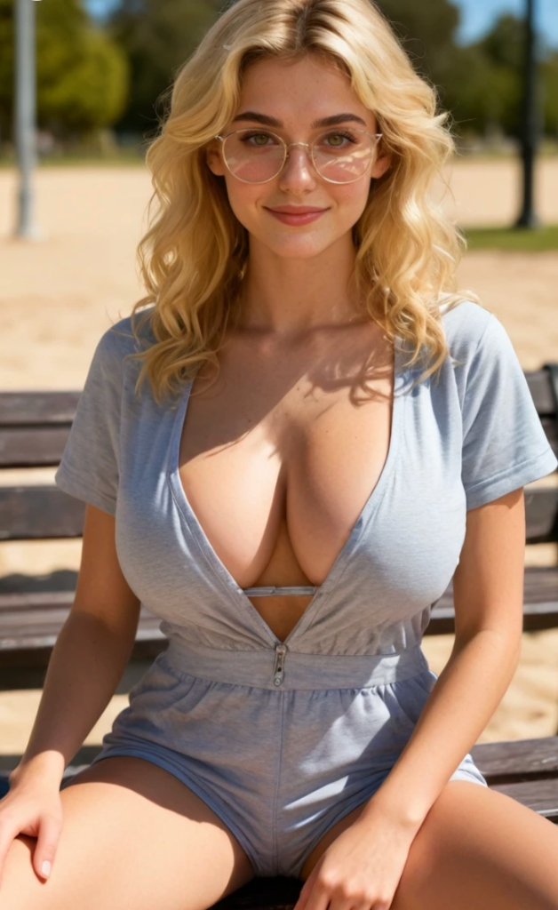
Prototipo B2B • En AdopciónAlejandra
Embajadora Virtual • Disponible para NegociosPrototipo de alta fidelidad estética no implementado comercialmente. Disponible para ser adoptada, bautizada y operada exclusivamente por una marca o empresa aliada.
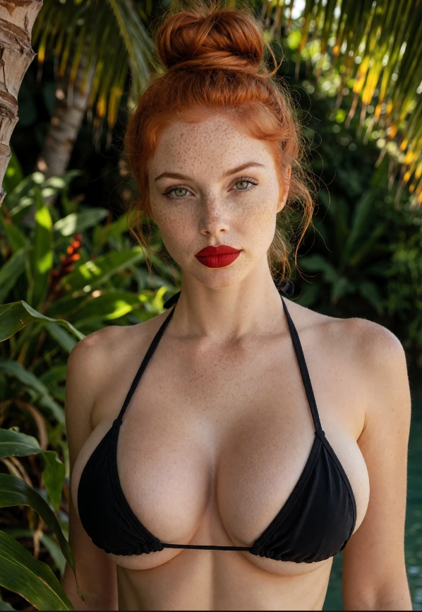
Nicho Adulto VIP • Sex-PositiveAlina Van Dijk
Dominatrix Consciente & Erotismo Terapéutico28 años. Ámsterdam / Barcelona. Exploración de fetiches sin culpa, dominación psicológica elegante y audios inmersivos con actitud positiva y consentimiento.
Servicios de Creación: Clones Digitales & Modelos de Marca Blanca
Además de nuestro elenco propio, producimos activos sintéticos exclusivos llave en mano para fundadores, marcas de moda y empresas.


Nuestras 3 Líneas de Negocio
1. Influencers Digitales IA
Creación, gestión y monetización de avatares e influencers virtuales generados por IA con consistencia facial impecable y narrativas envolventes.
- Identidad y Backstory Único
- Producción de Material Gráfico Base
- Embudo de Monetización (Soft a Exclusive)
- Inserción en Fanvue / OnlyFans / Patreon
2. Canales YouTube Educativos
Canales de alto enganche con guiones educativos, animación generativa y narración envolvente sobre ciencia, historia y filosofía.
- Contenido Infantil & Viajes en el Tiempo
- Divulgación Sci-Fi & Tecnológica
- Narrativas sobre Historias y Religiones
- Edición y Optimización de SEO
3. Asesorías Comunicacionales
Coaching de comunicación, desarrollo de habilidades de expresión, networking profesional y dominio de idiomas para ejecutivos y creadores.
- Entrenamiento en Oratoria y Presencia
- Estrategia de Marca Personal
- Coaching de Idiomas y Relaciones
- Planes de Posicionamiento B2B
Rentabilidad & Escalabilidad de la Agencia
Métricas ejecutivas diseñadas para socios e inversionistas: ventajas asimétricas de los influencers generados por IA frente al talento tradicional.
Formatos YouTube: Canales Automatizados y Monetizables
Canales faceless de alta retención generados con IA. Modelos de negocio listos para monetización diversificada vía AdSense, patrocinios B2B y licencias educativas.
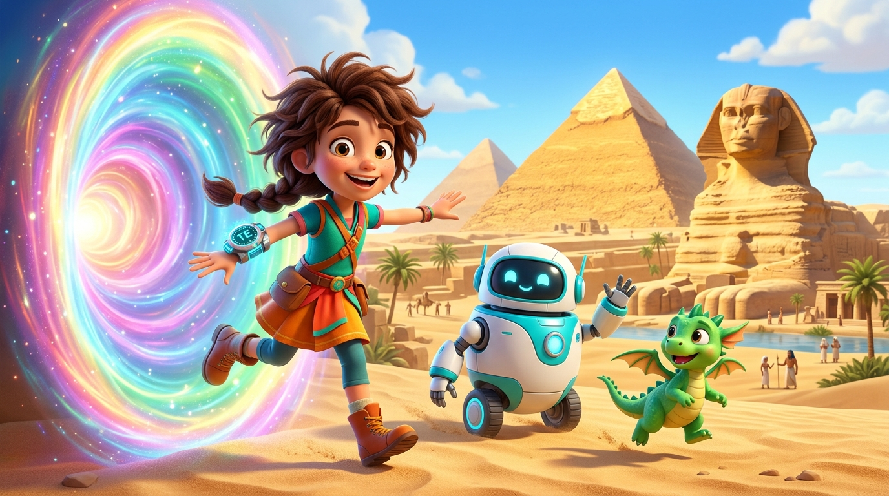
Formato Infantil1. Los viajes de Sofía
Historia & Valores para FamiliasMicro-aventuras animadas de 60 segundos por portales temporales (Egipto, Roma, Renacimiento). Alta retención y co-creación con audiencia infantil.
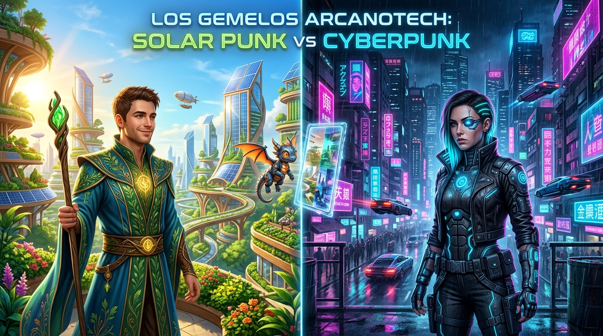
Sci-Fi & Futurismo2. Gemelos Arcanotech
Solarpunk vs CyberpunkDebates narrativos entre dos magos gemelos: utopías solares ecológicas vs distopías cibernéticas nocturnas. Atractivo para comunidad tech y dev.
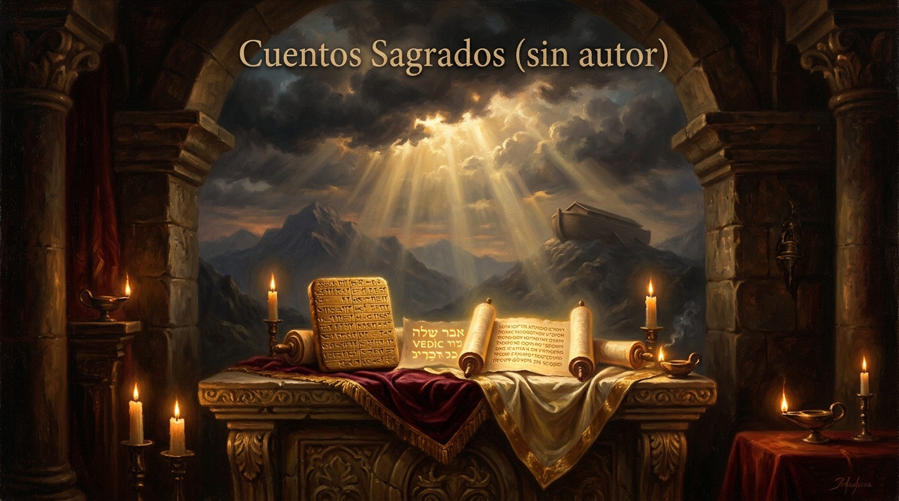
Historia Universal3. Cuentos Sagrados
Mitología & Textos AntiguosRelatos universales y mitos fundacionales narrados con sobriedad y arte generativo estilo óleo al claroscuro. Gran consumo en audiencias maduras.
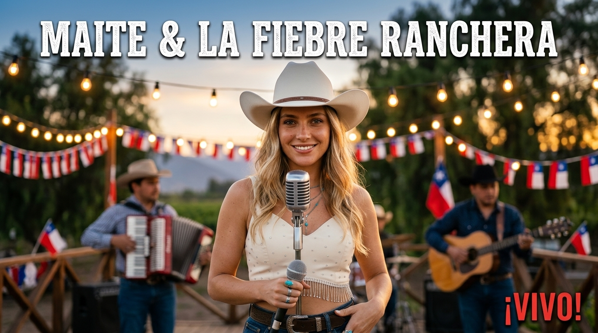
Música Chilena4. Maite Ranchera
Cumbia Campesina & Cono SurVideoclips 4K generativos y mixes festivos de 1h para asados y fiestas populares en Chile y el Cono Sur con la voz y carisma de Maite Valenzuela.
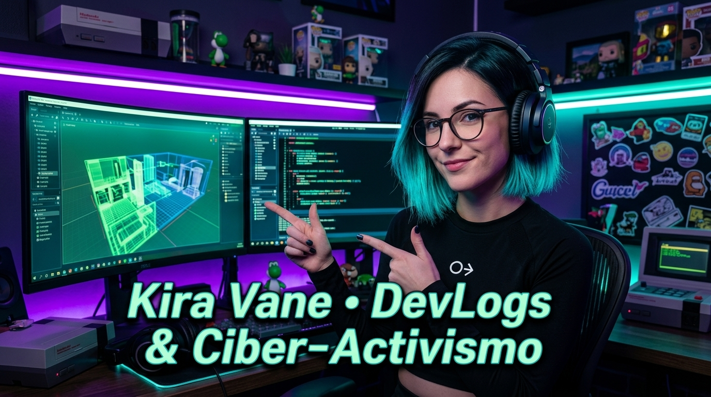
Gaming & DevLogs5. Kira Vane DevLogs
Desarrollo Indie & Ciber-ActivismoDevlogs de programación de videojuegos en Godot/Unreal y ensayos sobre soberanía de código y privacidad digital presentados por Kira Vane.
Coproducción de Canales & Venta Llave en Mano
¿Quieres lanzar un canal temático automatizado para tu marca o fondo? Estructuramos el canal desde el branding hasta los guiones y renders semanales con esquemas de rev-share o venta completa.
Identidad 3D Neón — Los Manejadores
El isotipo oficial 3D Neón Play Modular representa la fusión entre contenido de producción (Play), diálogo comunicacional (Burbuja) y aceleración de audiencias (Flecha de crecimiento).
Ver Hub de Copys del Equipo